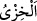
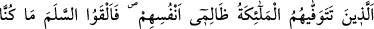
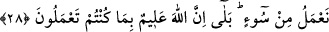

şâhidlerin huzûrunda rüsvâ edici bir azabla zelil kılar. __WORD__ utanılan bir zillettir.
Sonra bu iki karşılığın arasındaki farkı şöyle beyan ediyor:
Onları azarlamak ve ayıplarını ortaya koymak için Allah şöyle buyurur: “Kendileri
hakkında” yâni mü’minler size o putların bâtıl olduklarını açıkladıktan sonra onlar
hakkında peygamberlere ve mü’minlere “düşman kesildiğiniz” sizin iddiânıza göre
Benim “ortaklarım nerede?”
Bu soru ile kasdedilen, alay etme ve susturma yollu o putları şefâat etmek ve
müdâfaada bulunmak için hazır olmalarını istemektir. Onların nerede olduklarının
açıklanmasının istenmesi, gerçekten onların kaybolmasını gerektirmez. Bilakis bu
konuda, onların iddiâ ettikleri ilahlık vasıflarıyla orada hazır olmayışları yeterlidir.
Dolayısıyla orada ne ortaklar ve ne de onların mekanları vardır.
“Kendilerine ilim verilmiş olanlar” mevkıf ehlinden kendilerine tevhîdin delilleriyle
ilgili ilim verilen peygamberler ve mü’minler, zâten onları dünyâda tevhîde çağırırlar,
kendileriyle mücâdele ederler, onlar ise bu mü’minlere büyüklük taslarlardı. İşte bu
mü’minler onları azarlamak ve onlarla alay etmek üzere “derler ki: “Şüphesiz bugün
rezillik” küçük düşme, zillet, hafife alınma, horluk, rüsvalık “ve kötülük” azab
“kâfirleredir.” Allah Teâlâ’yı, âyetlerini ve peygamberlerini inkâr edenleredir. Azab
burada kâfirlere hasredilmiştir. Ya da cümle: “Şüphesiz bugün rezillik ve kötülük
kâfirlere olsun” anlamında duâ cümlesidir. Sanki rezillik, yâni azab âsî mü’minler için
devamlı olmayacağı için kâfirlere yapılacak azab cinsinden çıkarılmıştır.
28. Kendilerine haksızlık ederlerken meleklerin canlarını aldıkları kimseler: “Biz
hiçbir kötülük yapmıyorduk.” diyerek teslim olurlar. “Hayır, Allah, sizin
yaptıklarınızı elbette çok iyi bilendir.”
“Kendilerine haksızlık ederlerken” Küfür ve müstekbirlik üzere devam ettikleri
halde demektir. Bu durum, onların kendilerine zulmetmesi anlamına gelir. Haksız yere,
Cebbâr ve Melik olan Allah’a büyüklük taslamaları sebebiyle yaptıkları zulümden
dolayı kendilerini ebedî azâba mârûz bırakmışlar ve böylece Allah’ın vaz’ettiği fıtratı
değiştirmişlerdir.
“Meleklerin canlarını aldıkları kimseler:” Önceki âyette geçen rezillik ve kötülük,
bu âyette küfrü ölüme kadar devam edenlere tahsis edilmiş, ömrünün sonuna doğru bile
olsa onlardan îmân edenler hâriç bırakılmıştır. Yâni bu kimseler ölüm meleği ve onun
yardımcıları ruhlarını alıncaya kadar küfür üzere devam eden kâfirlerdir.
Kendilerini azabdan kurtarmak için kasden içlerindekini inkâr ederek “Biz” dünyâda